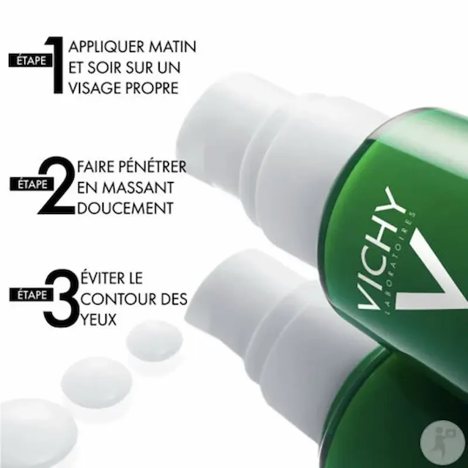
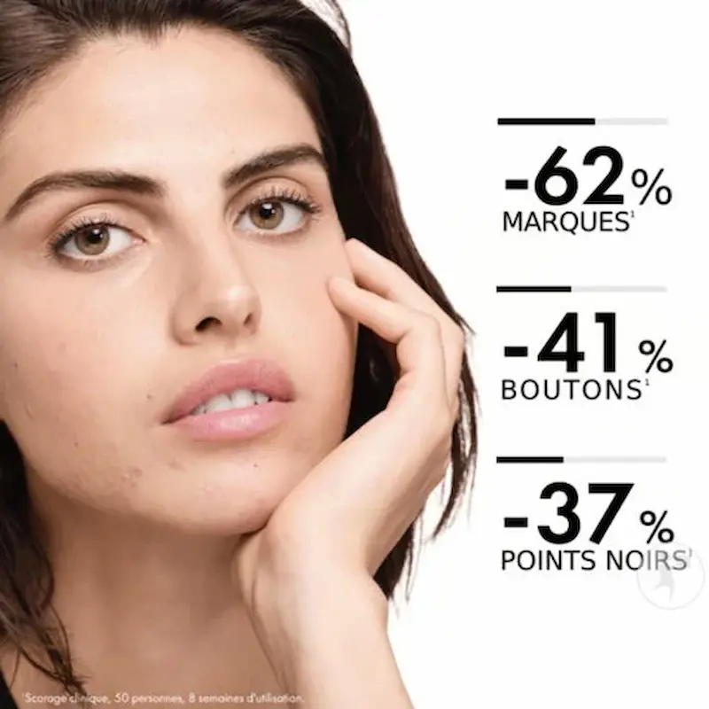

Vichy Normaderm Phytosolution Matifying Care: controlul sebumului și efect mat fără a încărca pielea
Recenzie independentă. Produsul nu este sponsorizat.
Analizăm de ce această cremă este atât de apreciată în rutina pentru ten gras și mixt: formula este concepută pentru a regla producția de sebum, a reduce luciul și a îmbunătăți textura pielii. Textura ușoară și ingredientele active ajută la menținerea echilibrului pielii fără a o usca. În condițiile climatului din Moldova, produsul este deosebit de util — reduce excesul de sebum pe parcursul zilei și oferă un aspect mai uniform și îngrijit.

Vichy Normaderm Phytosolution Matifying Care
Cremă matifiantă cu textură ușoară, care nu încarcă pielea și este potrivită pentru utilizare zilnică. Formula conține acid salicilic și niacinamidă, ingrediente care ajută la curățarea porilor, reduc excesul de sebum și calmează imperfecțiunile. Se absoarbe rapid, nu lasă senzație lipicioasă și oferă un finish mat natural. Este potrivită pentru ten gras și mixt, mai ales în perioadele calde sau atunci când pielea are tendința de a luci în zona T.
De ce merită atenția acest produs?
Vichy Normaderm Phytosolution Matifying Care este un produs de îngrijire zilnică pentru pielea grasă și predispusă la acnee, conceput pentru reducerea imperfecțiunilor și controlul excesului de sebum. Formula conține acid salicilic, acid hialuronic și ingrediente de origine probiotică.
Produsul ajută la diminuarea coșurilor, reduce vizibilitatea porilor și matifiază pielea fără a o usca. Textura ușoară se absoarbe rapid, nu blochează porii și este potrivită pentru utilizare zilnică, dimineața și seara.


Cremă matifiantă cu textură lejeră, concepută pentru ten gras și mixt, care ajută la controlul excesului de sebum fără a usca pielea. Formula cu acid salicilic și niacinamidă acționează pe mai multe niveluri: curăță porii, reduce luciul și uniformizează aspectul pielii. Se absoarbe rapid, nu încarcă tenul și este potrivită pentru utilizare zilnică, mai ales în perioadele calde sau când pielea devine mai grasă.
Textura și prima utilizare
Vichy Normaderm Phytosolution Matifying Care are o textură gel-cremă ușoară, care se aplică uniform și se absoarbe rapid în piele. Nu lasă peliculă grasă și nu creează senzația de ten încărcat, ceea ce o face potrivită pentru utilizarea zilnică.
După aplicare, pielea capătă un aspect mai mat și mai neted, dar rămâne confortabil hidratată. Funcționează foarte bine ca bază de machiaj — fondul de ten se aplică mai uniform și rezistă mai bine pe parcursul zilei. În plus, ajută la controlul luciului, în special în zona T.
Analiza formulei: ce conține?
Formula combină ingrediente active cunoscute pentru efectul lor asupra tenului gras și predispus la imperfecțiuni. Acidul salicilic (BHA) pătrunde în pori și ajută la eliminarea excesului de sebum, prevenind blocarea acestora, iar niacinamida contribuie la reglarea secreției de sebum și calmarea pielii.
În același timp, produsul conține ingrediente cu rol hidratant și calmant, care ajută la menținerea echilibrului pielii. Astfel, crema poate fi folosită constant, fără a provoca uscăciune, și se adaptează bine la schimbările de temperatură și la rutina zilnică.
Cum să folosești produsul pentru efect maxim
Vichy Normaderm Phytosolution Matifying Care se aplică dimineața și seara pe tenul curat, inclusiv pe gât. Folosește o cantitate mică și distribuie uniform prin mișcări ușoare până la absorbția completă. Crema matifiază rapid pielea, controlează excesul de sebum și reduce vizibil aspectul porilor, fără senzație de greutate sau lipici.
Sfat pentru un efect mat de durată: combină produsul cu un gel de curățare delicat pentru ten gras. Funcționează excelent ca bază de machiaj — fondul de ten se aplică mai uniform și rezistă mai bine pe parcursul zilei. Este deosebit de util în perioadele calde sau când temperatura variază, iar pielea tinde să devină mai lucioasă.
Cui NU i se potrivește produsul?
Vichy Normaderm Phytosolution Matifying Care este formulată pentru ten gras și mixt, cu exces de sebum. Persoanele cu ten uscat sau foarte sensibil pot resimți o ușoară senzație de uscăciune dacă nu folosesc un produs suplimentar de hidratare.
Dacă ai nevoie de hidratare intensă sau de refacerea pielii deshidratate, este recomandat să combini această cremă cu produse mai nutritive din gama Vichy Aqualia Thermal. Normaderm Matifying Care este orientată în principal spre controlul sebumului, matifiere și reducerea porilor, nu spre hidratare profundă.
Unde poți cumpăra Vichy Normaderm Matifying Care în România?
Gama Vichy Normaderm este disponibilă în majoritatea farmaciilor din România. Produsul poate fi găsit în rețele precum Farmacia Tei, Dr. Max, Sensiblu, dar și pe platformele online ale acestora.
Este recomandat să verifici disponibilitatea și prețul pentru Vichy Normaderm Matifying Care înainte de achiziție. Frecvent apar reduceri la dermato-cosmetice, mai ales în sezonul cald, când produsele matifiante sunt foarte căutate.
Unde poți găsi Vichy Normaderm Phytosolution Matifying Care?
Dacă ești în căutarea unui produs pentru pielea grasă și cu tendință acneică, Vichy Normaderm Phytosolution Matifying Care poate fi găsit în farmacii și magazine online din Romania.
Verifică disponibilitatea și prețul*Linkul este oferit în scop informativ. În cazul unui parteneriat, aici va fi plasat link direct către produs.
Întrebări frecvente
Pielea rămâne lipicioasă după aplicare?
Nu, Vichy Normaderm Phytosolution Matifying Care matifiază pielea și controlează luciul fără să lase senzație lipicioasă. Textura gel-cremă este ușoară, se absoarbe rapid și este potrivită pentru utilizare zilnică.
Este potrivită pentru tenul predispus la acnee?
Da, produsul este formulat pentru ten gras și mixt. Vichy Normaderm Matifying Care ajută la reglarea sebumului, reduce vizibil porii și contribuie la diminuarea imperfecțiunilor, fără a irita pielea.
Când se vede efectul de matifiere?
Efectul matifiant este vizibil imediat după aplicare. Utilizarea regulată ajută la menținerea unui aspect proaspăt, reduce luciul și face porii mai puțin vizibili.
Poate fi folosită zilnic?
Da, Vichy Normaderm Phytosolution Matifying Care este potrivită pentru utilizare zilnică, dimineața și seara, mai ales dacă tenul are tendința de a deveni lucios pe parcursul zilei.
Este potrivită pentru adolescenți?
Da, formula este bine tolerată și potrivită pentru pielea tânără, predispusă la exces de sebum și imperfecțiuni. Ajută la reglarea secreției de sebum și la reducerea luciului.